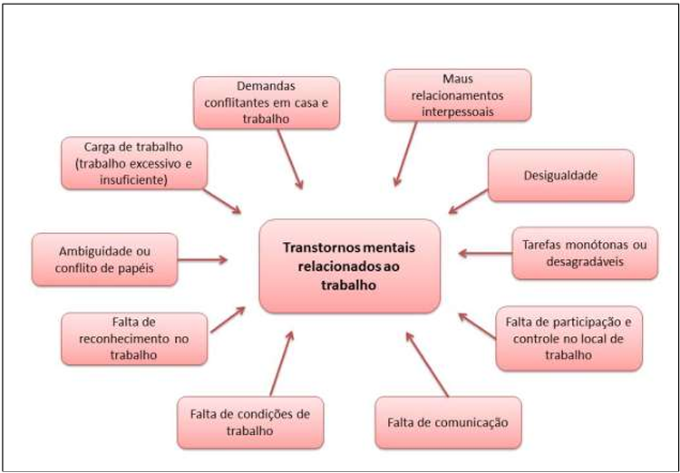
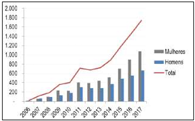
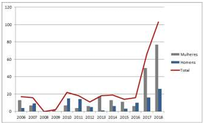
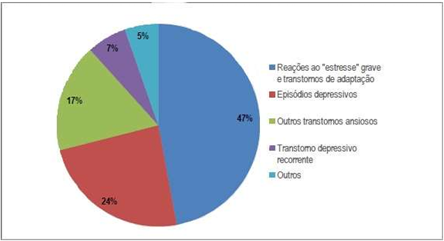
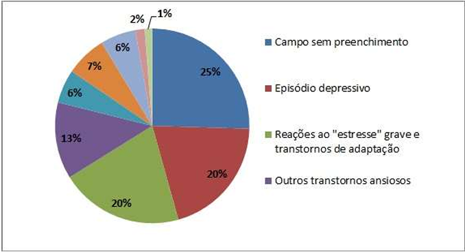

A saúde mental é parte integrante da saúde e do bem-estar, conforme a definição preconizada pela Organização Mundial da Saúde: "A saúde é um estado de completo bem-estar físico, mental e social e não apenas a ausência de doença ou enfermidade". A saúde mental precisa ser abordada por meio de estratégias abrangentes de promoção, prevenção, tratamento e recuperação. Os determinantes da saúde mental incluem não só apenas atributos individuais, como a capacidade de gerenciar pensamentos, emoções, comportamentos e interações com os outros, mas também sociais, culturais, econômicos, políticos e fatores ambientais, como as condições de trabalho (OMS, 2013).
O trabalho influencia de forma direta na esfera econômica, social e cultural de uma sociedade, pois é um elemento central da vida do homem moderno. A atividade laborativa apresenta-se como um elemento capaz de interferir ou até mesmo contribuir para a relação saúde-doença mental (Leão e Vasconcellos, 2015). Fernandes et al., 2018 afirma que a relação saúde-trabalho-doença vem sendo cada vez mais estudado, em virtude da sua relevância para o homem e para a sociedade. Os transtornos mentais relacionados ao trabalho são reconhecidos como um problema global de saúde. O trabalho é um agente de promoção a saúde mental, entretanto um ambiente de trabalho negativo pode levar a problemas de transtorno mental (Figura 1).
Figura 1. Ilustração de um adoecimento mental.
As doenças mentais são responsáveis por uma redução significativa do potencial de oferta de trabalho, pelo aumento do absenteísmo e pela exclusão social de milhares de pessoas, gerando altos custos econômicos e sociais (OECD, 2015). Problemas de saúde mental, como depressão, ansiedade, dependência química e estresse, são comuns, afetando indivíduos, suas famílias, as relação no trabalho e a sociedade como um todo. Além do impacto direto nos locais de trabalho por meio do aumento do absenteísmo, redução significativa da produtividade e aumento de custos (WHO, 2005). No contexto da saúde do trabalhador, surgem alguns estudos que evidenciam altos índices de suicídio e transtornos mentais em determinadas classes profissionais. Um exemplo é a incidência de depressão em profissionais de saúde, professores e policiais, associado ao alto índice de síndrome do esgotamento profissional (Almeida et al., 2016)
Segundo Fernandes et al. 2018, as características físicas do trabalho e o ambiente cada dia mais competitivo das organizações atuam como fatores propulsores do adoecimento mental, ao observar as constantes mudanças que exige o dinamismo do trabalhador. Conforme o Ministério da Saúde a contribuição do trabalho para as alterações da saúde mental dos indivíduos dá-se a partir de uma gama de aspectos: desde fatores pontuais, como a exposição de determinado agente tóxico, até a complexa articulação de fatores relativos à organização do trabalho, como a divisão e parcelamento das tarefas, as políticas de gerenciamento das pessoas e a estrutura hierárquica organizacional (BRASIL, 2001).
A Organização Mundial da Saúde elenca os principais fatores no ambiente de trabalho que podem contribuir para problemas de saúde mental, figura 2 (OMS, 2005). Os fatores de riscos a saúde mental também podem estar relacionados ao conteúdo do trabalho, como tarefas inadequadas para as competências da pessoa ou uma carga de trabalho alta e implacável. Alguns empregos podem acarretar um risco pessoal mais alto do que outros. O risco pode ser aumentado em situações em que há falta de apoio social (OMS, 2019).
Figura 2. Principais fatores presente no ambiente de trabalho que contribuem para os transtornos mentais.
Os transtornos mentais associados ao trabalho são de notificação compulsória no Sistema de Informação de Agravos de Notificação (SINAN), sendo esse um importante dispositivo de coleta de dados existentes no Sistema Único de Saúde. O boletim epidemiológico feito pelo Centro Colaborador da Vigilância aos Agravos à Saúde do Trabalhador vinculado ao Programa Integrado em Saúde Ambiental e do Trabalhador (PISAT) do Instituto de Saúde Coletiva (ISC/UFBA) divulga os resultados de um amplo estudo sobre os “Transtornos Mentais Relacionados ao Trabalho no Brasil”, entre os anos de 2006 e 2017, o qual utilizou dados do SINAM.
Os resultados apresentados no boletim elaborado pelo do Centro Colaborador da Vigilância aos Agravos à Saúde do Trabalhador mostram que a maior parte das notificações de transtornos mentais relacionados ao trabalho era do sexo feminino (59,7%), o período de análise corresponde aos anos de 2006 a 2017 (figura 3).
Figura 3. Número de notificações de transtornos mentais relacionados ao trabalho, por ano (2006 – 2017) e de acordo como o sexo. SINAN, Brasil (N= 8.474).
Em análise ao SINAN no período de 2006 a 2018 o estado do Mato Grosso do Sul segue o perfil nacional de notificação, o qual a maior incidência é do sexo feminino (66,1%) e apresentando uma crescente na notificação de transtorno mental relacionado ao trabalho (figura 4).
Figura 4. Número de notificações de transtornos mentais relacionados ao trabalho, por ano (2006 – 2017) e de acordo com o sexo. SINAN, Mato Grosso do Sul 2006-2018 (N= 322).
O diagnóstico mais comum tanto em nível nacional (figura 5) como no estado de Mato Grosso do Sul (figura 6) são: reações ao estresse grave e transtornos e episódios depressivos. Entretanto, no Estado existe uma grande ocorrência de falta de preenchimento no campo diagnóstico (25%) o que evidência falha na notificação.
Figura 5. Distribuição dos diagnósticos específicos das notificações, por transtornos mentais relacionados ao trabalho. Brasil 2006-2017 (N=8.474).
Figura 6. Distribuição dos diagnósticos específicos das notificações, por transtornos mentais relacionados ao trabalho. Mato Grosso do Sul 2006-2018 (N=322).
O estresse relacionado ao trabalho é entendido como um conjunto de reações emocionais, fisiológicas, comportamentais e cognitivas ligados ao conteúdo, à organização e ao contexto do trabalho. É um estado que se caracteriza por altos níveis de excitação e angústia, com a frequente sensação de não ser capaz de lidar com a situação (Comisión Europea, 2000). Globalmente, estima-se que 264 milhões de pessoas sofrem de depressão, uma das principais causas de incapacidade laboral, além do que muitas dessas pessoas também sofrem de ansiedade (WHO, 2019). Santi et al. (2018) analisaram estudos nacionais sobre o absenteísmo-doença no serviço público, os mesmos apontaram o predomínio de doenças osteomusculares (DOM) e transtornos mentais e comportamentais (TMC), predominantemente em servidores das áreas da saúde e da educação, com as características principais: sexo feminino, acima dos 40 anos de idade, com tempo de duração da licença aumentando proporcionalmente ao tempo de carreira.
O estudo de Leão e Gomez (2014) aponta alguns subsídios teóricos na construção de estratégias com a finalidade de promover a integração da saúde mental na vigilância de saúde do trabalhador - Visat, no âmbito da Rede Nacional de Atenção Integral à Saúde do Trabalhador - Renast. As questões de transtorno mental relacionado ao trabalho é a interseção das relações materiais, técnicas, sociais e organizacionais do trabalho com os sujeitos, é preciso investigar as reais condições de cada contexto e situação de trabalho. Leão e Gomez (2014) apontam possíveis caminhos para integrar a saúde mental nas etapas de planejamento, preparação, realização e avaliação de processos de vigilância.
A primeira demanda é a coleta, produção e análise de informações para proceder a implementação de ações de vigilância a partir de diferentes fontes de dados. Uma estratégia fundamental para aprimorar a coleta de informações, está na interlocução estreita e permanente dos Centros de Referência em Saúde do Trabalhador – Cerest, com os serviços de Atenção Básica, equipes de saúde da família e demais unidades e programas na rede de saúde local e regional, mas particularmente neste caso com os Centros de Atenção Psicossocial - Caps. Ainda conforme os autores, alguns elementos da organização do processo de trabalho que a vigilância deve olhar, enquanto balizas iniciais para propiciar a aproximação com as fontes dos sofrimentos são: (1) organização do tempo e intensidade de produção; (2) práticas de gestão; (3) cultura organizacional; (4) relações interpessoais; (5) atividade e autonomia; (6) relação dos sujeitos com sua atividade; (7) situações relativas ao vínculo de trabalho; (8) questões externas ao processo de trabalho (LEÃO E GOMEZ, 2014). Assim como em outras práticas de vigilância, é necessário proceder à verificação e análise de documentos relativos à saúde e segurança, como: afastamentos do trabalho, taxas de frequência e gravidade de acidentes e doenças profissionais, práticas de controle médico em saúde mental, atas da CIPA, programas existentes de qualidade, índices de absenteísmo e rotatividade de colaboradores, além das práticas de gestão (LEÃO E GOMEZ, 2014).
Segundo Leão e Gomez (2014) os resultados das ações de vigilância à saúde mental dos trabalhadores não é uma questão meramente técnica. Interferir na gestão e organização do trabalho significa entrar num terreno de conflito de interesses antagônicos de diversos níveis e, portanto, tem os seus limites. Portanto a vigilância em saúde em processo e ambientes de trabalho incluindo o tema transtorno mental é um campo amplo de estudo para efetiva integração.
O desemprego é um fator de risco no adoecimento mental. Contudo um ambiente de trabalho o qual esteja presente uma excessiva carga de trabalho, assédio moral, falta de condições de trabalho e de comunicação, relações interpessoais conflitantes, entre outros fatores, pode levar ao transtorno mental e consequentemente aumenta do absenteísmo e perda de produtividade. Um elemento importante para alcançar um local de trabalho saudável é o desenvolvimento de legislação, estratégias e políticas governamentais, na promoção da saúde mental nas organizações.
Um local de trabalho saudável pode ser descrito como aquele em que trabalhadores e gestores contribuem ativamente para o ambiente de trabalho, promovendo e protegendo a saúde, a segurança e o bem-estar de todos os funcionários (OMS, 2013). Portanto é evidenciada a necessidade de responder as demandas de transtorno mental que cada vez se torna mais explícita na área de saúde do trabalhador. Devemse desenvolver políticas públicas que garantam ações em saúde mental relacionadas ao trabalho em todos os níveis de atenção do SUS, além do fortalecimento das ações intersetoriais.
É indispensável à realização de pesquisas sejam desenvolvidas para o desenvolvimento de instrumentos e metodologias que auxiliem em planos de ações, para o estabelecimento do nexo da relação desse agravo com o trabalho nos serviços de saúde, como também ações de Visat que levem em conta o espectro da saúde mental.